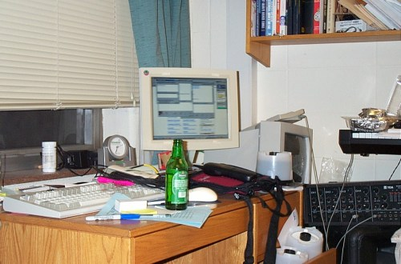

Andrew drove a long drive back up to Oberlin after Christmas. His car
was loaded up with appliances of all kinds and parked illegally
downstairs for unloading, but before he made the first run down to
start unpacking, he cracked open a cold one, booted the old PC, and
signed on to the Voice Major Network to begin his multiple chat sessions.